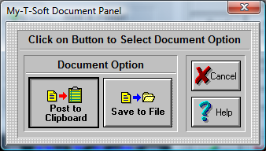

| My-T-Soft®: for Windows; Indestructible Keyboards and Indispensable Utilities; Version 1.80; User's Guide | ||
|---|---|---|
| Prev | Next | |

The documentation will correspond to the selected Macro Panel.
Post to Clipboard
Click on this button to Post the Panel Documentation onto the Windows Clipboard. You may then paste the textual information into any word processor, or other application that uses text.
Save to File
This will open the File Save Dialog which will allow you to save the textual Panel Documentation to a file & save the information to disk.
Press the CANCEL button to Close the Dialog & cancel the documentation operation.